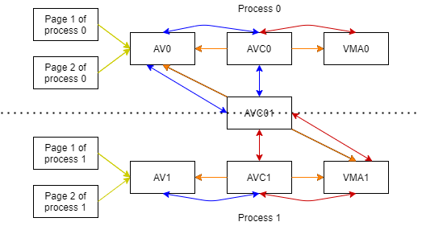

Linux RMAP¶
前言¶
MMU 機制是 virtual address 找 physical address，可以使用 page table 查詢。 但相同的 physical page 可能會有多個 process 共用，如 process A fork process B，此時 A、 B 是共用 physical page 的。
RMAP 常見的需求是 swap 的情況： 當 physical address 經 LRU 機制判斷為不常用的 page，而要被 swap 到硬碟時， 應該告訴使用此 page 的 process 此頁面已被 swap。 RMAP 的機制就是在此情況下找到使用的 process 的 VMA (Virtual Memory Area)，已更新上面的資訊， 讓 process 知道 page 目前不在記憶體中。
RMAP 另一個常見需求是做 migrate： 因為記憶體會隨著使用時間有破碎化的問題，需要經由搬移 (migrate) 來取得連續的記憶體， 而要搬 migrate 的當下，需要藉由 page 找到使用的 VMA， 並通知 page 的 phyicial address 已經被更新，也就是更新 page table。
早期機制的實作概念、缺陷分析¶
早期機制的概念¶
針對每一個 page，會有一個稱為 anon_vma 的 struct，目標要存放所有使用到此 page 的 VMA，只要每次 VMA 有配置到此 page 時，皆會去維護此 anon_vma。
多個 page 可能會指到同一個 anon_vma 作維護，常見狀況是 process 可能會要很多的 page 出來，其特性都是分類在同個 VMA 裡的。
這樣的情況也會發生在不同的 process 上，當 parent fork 出 child 後，可能有部分的 page 有發生 COW (Copy-On-Write)，部分的 page 沒有，但對於 parent 來說都是使用同一個 VMA 管理，anon_vma 實際上也需要找到 child 的 VMA，因此 parent 和 child 會共用同一個 anon_vma，並且有任何 page 發生 COW 時，會把 child 的 VMA 加入到 anon_vma 中。
問題發生的原因與情境¶
背景原理解釋¶
依前面機制的概念知道，所有可能會使用到此 page 的皆會需要維護 anon_vma 的內容，但是同時可能會有多個 process 需要修改，因此會需要拿 spinlock。
在 process fork 之後，COW (Copy-On-Write) 發生時，會需要把此 process 的 VMA 加入到 anon_vma中， 因此需要拿 spinlock 以加入，而當數量一多起來的時候，spinlock 就會拿很久，且很多 process 要搶。
問題發生的情況¶
有個 process (A) 在某個 VMA 中有 1000 個 page，之後此 A fork 了 999 次， 所以總共會有 1000 個 process，之後的，而參照前面的說明， fork 當下不會把 child 的 VMA 加入到 anon_vma 中， 而是到 COW 發生時目前機制的當這 1000 個 process 的每個 page 都同時發生 COW 的時候， 就會有 1000 * 1000 = 1000000 個事件需要搶 spinlock 以加入到 anon_vma 中，此為目前機瓶頸，也是新的方法為解決的問題。
雖然上述情況可能會覺得非常的極端，但是對於大型的 server 來說是可能發生的，而系統為了穩定，也都會需要考慮。
改善的做法 (目前使用的做法)¶
問題分析與改善方向¶
過去只要是有可能會用到的，全都會加入到 anon_vma 中，不管是 fork 後未經 COW 時共用的 page， 或是 COW 發生後 parent 或是 child 獨自擁有的 page，全都都放在同一個 anon_vma 中， 導致要做任何相關操作的時候都要拿 anon_vma 的 spinlock，因此解法的脈絡上就是把這些關係分類出來， 依照某種關係做 link (使用 pointer 指到)，這樣可以把有影響到的再拿 lock 即可，以減少無相關的操作卻也拿 lock。
process 和 page 之間的關係¶
此以 process 0 fork 出 process 1 為舉例，先介紹各個元件的特性：
概念¶
先回到最一開始的問題，我們會希望可以從 page 找到使用了這個 page 的所有 VMA，對應到圖上，
對於同一個 process 0 來說，可能會有多個 page 會由同一群 VMA 所管理，因此如何找到 VMA 的方式我們希望可以共同紀錄，
以減少維護成本與記憶體的使用，因此由 AV (anon_vma) 來共用這些資訊，
而每個 page 只需要有個 pointer 紀錄管理此 page 的 AV 即可，也就是圖中 黃色線 的部分。
接續回原本的問題，現在 AV 代表了一群 page，希望找到管理這些 page 的 VMA，過去的方式是把所有的 VMA 都串在一起， 但有個嚴重的問題是會把實際上 VMA 只是部分重疊的都會算在同一個 AV 身上， 舉例來說，parent 和 child 雖然會有共用的 page，但也有各自使用的 page， 而就會因為有部分 page 是共用的，而導致各自使用的 page 也使用了同個 AV， 也就被迫共用 spinlock，因此這次的解法上，他們會分配到不同的 AV，且 AV 只會紀錄真的使用到此 page 的 VMA。
同理也會有目前有 VMA 會需要知道所有他使用的 page 的管理元件，也就是 AV， 因此很難以一個單純的串列即做到這種複雜關係的拓樸，因此作者引入了 AVC (anon_vma_chain) 的概念， 目的就是幫助串起相關的 AV 和 VMA，AV 可以藉由藍色線找到許多 AVC， 而這些 AVC 上面有橘色線連結到所要找到 VMA：同理，VMA 可以藉由紅色線找到許多 AVC， 而這些 AVC 上面有橘色線連結到所有要找到的 AV。
此圖的狀況為其中兩種種 AV / VMA / AVC 之間的關係圖，但皆為 process 0 fork 出 process 1 當時即會生成的樣子：
對於 AV0，為 process 0 和 process 1 一起共用的 page，也因此可以經由 AVC0 找到 process 0 的 VMA；可以經由 AVC01 找到 process 1 的 VMA。
對於 AV1，用於 process 1 發生 copy on write 時，給 process 1 的 page 所使用。
接下來我們來探討，為什麼此方法可以解決過去方法遇到的問題，分別有讀和修改兩個面向：
對於讀來說，過去只要想要經由 RMAP 的方式取得資訊，皆需要拿 RAMP 的 spinlock，而此方法改使用 RW lock，做到讀取時拿 read lock，就可以有多個同時讀取。
對於修改來說，也因為此關係圖為 fork 實際長出來了，因此不會像原解法一樣需要 1000 * 1000 (process 數 * page 數) 這麼高數量在搶 lock，只會有 1000 (process 數) 需要搶，因此大副下降搶 lock 的情況。且因為使用 RW lock，也就讓只有此情況才會需要拿 write lock，來確保只有一個人做修改。
各元件解釋¶
- VMA (Virtual Memory Area)
VMA 負責管理一段 virtual address，這段 virtual address 可能會有類似的性質， 如皆為可讀、不可寫、可執行的 code 段，這一段 virtual address 可以是多個 virtual page 構成，這些 virtual page 會由 VMA 來管理。
備註
負責管理一段性質類似的 virtual memory (page)。
- AV (anon_vma)
AV0 表示 process 0 的 anon_vma。 anon_vma 負責管理一段 phyicial address，這段 phyicial address 可能是由一個 process 的 VMA 所使用， 或是多個 process 的 VMA 所使用，而這段 phyicial address 可以是多個 page 所構成，這些 phyicial page 會由 anon_vma 來管理。
備註
負責管理一段性質類似的 phyicial memory (page)。
- AVC (anon_vma_chain)
為找到 AV 和 VMA 的樞紐，可以藉由其中 anon_vma 的 pointer 找到 anon_vma；可以藉由其中 vma 的 pointer 找到 vma，即為圖中橘色的線。 AVC0：對於 process 0，幫助 AV 和 VMA 找到對方的媒介。 AV01：對於 parent (process 0) 的 AV 和 child (process 1) 的 VMA，幫助找到對方的媒介，如圖中所示，可以找到 parent 的 AV；可以找到 child 的 VMA。
備註
視為找到有關的 AV 和 VMA 的媒介。
- 黃色線
struct page 中 mapping 變數 (page->mapping) 會指向管理此 page 的 anon_vma。 當要做 RMAP 時，可以藉由先黃色的線找到 AV，之後藉由 AV 上的關係 (也就是 AVC) 找到 process 0, 1 的 VMA
備註
黃色線 可以視為 藉由 page 找到 anon_vma 的方式。
- 橘色線
參考 AVC 的說明，為 AVC 找到 AV 或是 VMA 的 pointer。
- 藍色線
找到所有的 AVC，經由這些 AVC 可以找到所有使用到此 AV 的 VMA。
- 紅色線
找到所有的 AVC，經由這些 AVC 可以找到所有使用到此 VMA 的 AV。
參考¶
The case of the overly anonymous anon_vma ：詳細的解釋了各個階段 AV / VMA / AVC 之間的關係， 此 blog 的內容可以說由此篇做的理解與整理。